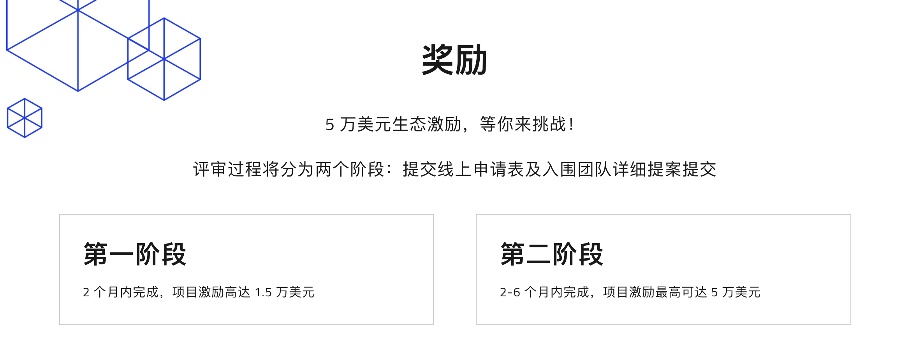
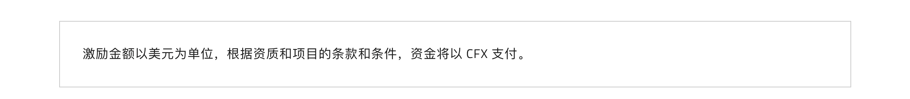
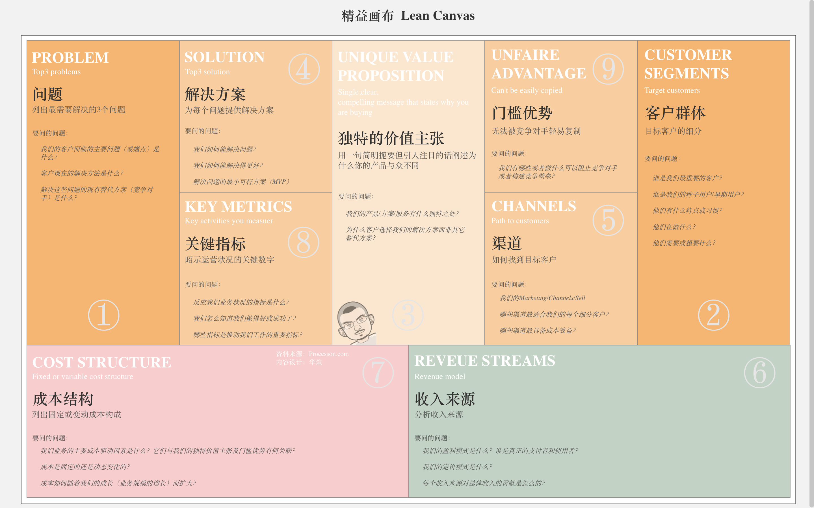

生态激励指南¶
感谢支持Conflux生态建设，本文将会大家最关心的生态项目激励规则、金额、流程、验收等问题进行阐释。
本文由Conflux技术社区评审小组成员共同编纂而成，希望通过本规则更能够好的服务前来Conflux进行生态建设的团队。
本文将在后续施行过程中根据实际情况持续更新迭代，欢迎各位朋友随时提出宝贵意见、建议。
本文最终解释权归Coonflux技术社区以及Conflux基金会团队所有。
一、Conflux生态激励计划¶
Conflux生态扶持计划是生态项目的孵化器，为Conflux链上有潜力的生态项目提供包括市场、基础服务、信息服务、补贴政策在内的各种孵化服务，全方位支持生态项目的发展与推广。
激励原则
1、优先鼓励探索生态图谱上还未开发的项目方向，尽量避免同类型项目扎堆内卷，但不限制已有类型项目申请。
2、L1阶段项目主要目的为验证项目方是否具有持续开发迭代的能力和技术水平，L1 阶段的目标应该是一个用户已经可以使用的demo，原则上需要在评审通过后2月内完成，如果无法按期完成需要提前一周申请并说明理由。
3、L2阶段项目主要目的为验证项目方是否具有实现功能性指标的能力，考察包含其团队技术水平及运营水平等综合能力，L2阶段的目标应该是实现L1阶段验收通过后设定的系列关键指标和功能，原则上需要在评审通过后6个月内完成，如果无法按期完成需要提前一周申请并说明理由。
4、L1、L2阶段激励均为报销制。评审小组将以开发工作量作为激励金额评审的依据，优先激励完全开源项目，对不开源项目减少激励金额到开源项目的60%或设定运营类的指标，服务器等成本最多承担半年。
5、包含IDO等国内法律不允许内容的项目，请直接从海外grants申请。
6、发放激励的目的是为了kick start一些在未来能够真正被用户使用的产品，被用户接纳从而自己造血，而非单纯的劳务外包。所以，每阶段申请和验收时，项目方创业团队都需要清楚自己接下来的目标任务和计划。
新团队加入Conflux，不管是迁移成熟项目上链、在Conflux上孵化还是想跟社区一起做项目，都可以向Conflux申请扶持。除经济激励外，Conflux生态扶持项目还可以获得以下服务：
市场服务
- 国内宣发：文章、重要事件、时间节点
- 线上活动对接：AMA、直播等
- 线下活动（技术沙龙，专题沙龙，大型峰会）对接
- 技术社区测试小组Beta Test
- 中国社区：Conflux社区/合作伙伴/KOL社区AMA，直播等线上宣发
- 团队搭建：社区大使/管理员，前后端工程师等人选推荐
- Conflux生态项目联动
- Conflux中国行
- 办公场地
- 海外PR：核心内容多语言翻译、宣发
- 海外社区：Conflux社区及合作伙伴社区AMA等线上活动
- 海外社区：0-1社区搭建
基础服务
- BTC/ETH/HECO/BSC/OKEX 资产跨链技术支持
信息服务
- Conflux Scan 智能合约信息注册，资产信息注册
- 上架 DAppBirds dApp 商店，首页推荐
- 登陆 Conflux 官网的生态页面
补贴政策
- Conflux 上所有智能合约代付补贴
二、Conflux生态激励阶段划分¶
  Conflux生态项目激励共分为3阶段，分别为 L1阶段（最高激励15K USDT）、L2阶段（高达50K USDT)、L3阶段（高达100K USDT） 。
在L1阶段验收通过后，项目即可进入L2阶段。
在L1、L2阶段验收均通过后，项目即可进入L3阶段。进入L3阶段的团队将直接与Conflux公司市场、商务等部门进行接洽，由Conflux官方相关人员确定激励方式、金额以及发放条件。
包含但不限于IDO在内的一切有中国法律风险内容的项目请直接申请海外Grants，申请链接：https://forum.conflux.fun/c/English/grant-proposals。
因社区主要负责对项目L1、L2阶段进行评审验收，所以本规则将重点关注项目L1、L2阶段的评审要求
三、激励范围¶
基础设施：开发跨链资产、数据等基础设施组件工具
- 互联互通，链接其他区块链网络
- 跨链技术
- 预言机开发，针对链上和链下数据
- 开发者工具，如分析、查询等
- 通证标准，如 NFT、RFT 和同质化通证等价物的标准
- 身份验证，如钱包、KYC、证书认证等
- 安全工具，如审计、密钥管理、托管解决方案等
- 移动端和游戏开发工具
- 市场信息聚合工具
- 集成钱包
社区：社区发展、管理和运作
- 仲裁、DAO、投票及治理
- 数字资产管理通证标准工具，如稳定币、NFT、跨链资产
- 加密经济学应用产品的定价、监管、质押等
- 参与并支持社区发展
DApp 生态：提高 Conflux 网络中 DApp 的用户使用率、流动性和可组合性
- DeFi 生态：如稳定币、跨链资产、支付渠道、借贷平台、合成资产（衍生品、期权）、DEX 、做市商等
- 通证项目，如非美元稳定币、跨链 BTC、ETH 及获黄金托管人背书的通证
- 共同创建 NFT 世界，如游戏、艺术、收藏品、音乐、一切天马行空的创意
重新部署：将资产迁移至 Conflux 网络
- 为测试网及主网部署进行技术整合
- 促进跨社区合作
- 为资产迁移提供流动性
四、生态申请流程¶
在Conflux链上开发生态项目申请流程如下：
1、L1阶段
项目方需准备项目名称、项目介绍、实现目标、时间节点、项目成果、项目进度计划、协作人、申请人、团队背景、申请时间、经费明细、是否开源、收款钱包地址、备注、资料链接、产品链接、项目灵感来源、L1阶段验收标准等资料。之后联系评审小组成员并在此Conflux论坛生态项目板块中发帖进行项目资料公示。生态项目板块地址：https://forum.conflux.fun/c/Chinese/Ecology。
2、L2阶段
项目LI阶段验收通过后，项目方设定关键指标，之后联系评审小组进行评审，公示周期满足7日，评审小组即安排进行生态项目评审会议。
第一次申请生态激励时需要将项目信息、联系方式填写至问卷中，评审小组成员会与您取得联系。(非常重要)¶
生态项目板块地址：https://forum.conflux.fun/c/Chinese/Ecology。
项目信息问卷链接：https://wj.qq.com/s2/8502555/95ca/
项目信息问卷二维码：

公示周期满足7日，评审小组即安排进行生态项目评审会议。
4.1 项目申请帖必填内容¶
（1）项目名称；
（2）项目类型（商业盈利类还是研究探索类）；
（3）项目介绍：
（4）实现成果：（当前申请内容所需要完成的内容）
（5）远期目标：（项目后期发展方向，底层建设的项目说明一下产生作用的领域以及方向）
（6）项目进度计划:（列名进度安排与时间节点）
（7）申请人：
（8）申请时间：
（9）团队背景：
（10）团队构成与分工（注明全职/兼职）：
（11）经费明细：
（12）是否开源：（完全开源、智能合约部分开源）
（13）资料链接：(如有)
（14）产品链接：(如有)
（15）项目灵感来源：
（16）其他需要说明的情况：（项目相关科普资料）
（17）项目的精益画布（商业盈利类项目必填，模板、填写方法见附录）。
（18）圈外引流的运营方案。
（19） 验收指标
4.2 项目须知¶
1、一个生态项目L1阶段申请的激励上限为1.5W USDT （等值FC和CFX1:1发放)，
项目方负责人在发布申请贴后需主动联系评审小组成员，以便后续沟通。
2、一个生态项目L2阶段申请的激励上限为5W USDT （等值FC和CFX1:1发放)，项目方负责人在L1阶段验收通过后，需主动联系评审小组成员，以便后续沟通。
3、申请通过的项目团队，需阶段性更新项目进度到对应的生态项目帖子内。
4、申请通过的项目团队申请人，联系评审小组成员进入生态项目建设群，便于资源协调与沟通。
5、游戏型项目需了解其经济模式、游戏规则、机制等，并且要注明详细的发布阶段。
4.3 项目分类标准¶
（一）商业盈利类项目（横向）¶
此类项目，以商业盈利为目的，用户量、锁仓量、交易量等指标可以反映项目运营状况，此类项目一般情况下技术创新较少，但会带来较多生态收益，游戏、defi产品都在此类。申请此类项目需要在申请公示帖中提供项目的精益画布（模板和填写方法见附录）。
项目举例¶
游戏类项目举例： 编号032 Dragon Master（NFT资产Dapp游戏）
defi类项目举例：
nft平台：
编号060 完全布局在CONFLUX生态上的CRYPTO ART平台—DIONYSOS
（二）研究探索类项目（纵向）¶
此类项目更倾向于研究探索、基础设施建设，短期内产生赢利可能性较低，但是技术开源可以为社区广大开发者提供便利。对于某些微小领域的探索也会激起整个技术社区的创新探索氛围、引发技术社区成员进行沟通交流，所以申请此类项目需要完全开源，申请、评审时需要提供更丰富的技术细节。
项目举例¶
编号033 汇流BPM (Conflux BPM)， 一个支持区块链的低代码快速开发平台
4.4 生态项目评审会议标准¶
1、L1阶段以项目评审为主
- 评审小组成员到位7名及以上
- 每项生态项目投票不得低于半数
2、L2阶段以关键指标设定为主
-
评审小组成员到位7名及以上。
-
每项生态项目投票不得低于半数。
-
各项关键指标，去掉最高值和最低值，取平均值。
4.5 生态项目评审会议时间¶
北京时间每周日下午2点30分。（无项目或特殊情况不举行）。项目填写公示之后，请及时通知评审小组成员，以及需要在帖子中回答社区成员的各种问答。
4.6 生态项目变更¶
生态项项目变更采用一事一议，项目方把需要变更的部分进行说明，并预估影影响，将详细信息发布到申请贴中，由评审小组投票决定是否通过变更并在申请贴中回复投票结果。
项目方在申请变更时会填内容需要包括：
• 变更描述（具体哪些项目进行如何的变更）
• 变更原因
• 变更利益
• 变更成本
• 变更带来的影响
• 支持性文件（选填）
4.7 申请激励流程¶
项目完结或阶段性完结，项目申请人可回帖申请验收，并通知验收小组。
验收申请包括但不限于：
• 主要工作完成情况
• 关键技术指标满足情况
• 成果实现情况
• 经费使用情况
• 技术测试情况
• 资料审查情况
一些项目需提交源代码链接，项目文档等相关资料打包。
验收申请包括但不限于：主要工作完成情况、关键技术指标满足情况、成果实现情况、经费使用情况、技术测试情况、资料审查情况等。验收小组将组织测试人员进行测试验收打分，并根据项目验收情况进行打分。
验收通过的项目，技术委员会会通过邮件向Conflux基金会提交《项目验收结果》，并抄送全体委员会成员。Conflux基金会审核后，向项目申请人拨付经费。
项目申请人收到经费后，回帖已收到全额经费，于申请帖标题追加状态（已完成）并告知技术委员会，项目完成。
五、生态项目邀请人激励计划¶
推荐人在推荐的项目L1阶段验收通过时获得项目L1阶段金额2%作为项目邀请激励。如果项目完成L2阶段验收，项目邀请人可在年终技术社区贡献申报时再次获得更大数额激励。
附录¶
Conflux生态图谱¶

精益画布模板及填写标准¶
 商业盈利类项目评审前须完成此项内容，如果没有制作工具直接按照要求将问题和答案按顺序罗列到申请贴中即可，填写要求标准见参考文献。
参考文献¶
Conflux 官网：https://confluxnetwork.org/zh/
Conflux Scan：https://confluxscan.io/
Conflux Defi：https://defi.confluxnetwork.org/zh/
Conflux 生态目录123:https://123cfx.com/
Conflux 开发资料包：https://juejin.cn/post/6940147768535023646
Conflux 论坛：https://forum.conflux.fun/
Conflux Grants:https://confluxnetwork.org/zh/developers/grants
什么是精益画布：https://zhuanlan.zhihu.com/p/23245402
精益画布：创业公司设计商业模式的最佳工具